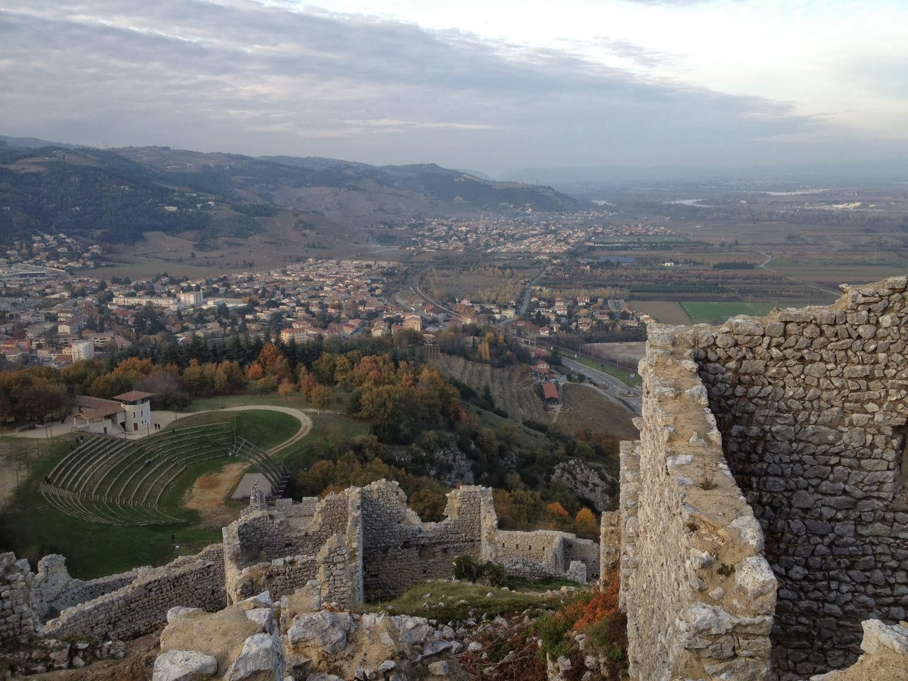

Perched on a rocky spur 250 metres above the Rhône valley, the Château de Crussol has watched over the town of Valence, just across the river, since the 12th century. A listed historic monument, this is one of the most iconic sites along the Ardèche side of the Rhône, about 35 minutes from Les Cabritas.

A fortress built to watch the Rhône
Built in the 12th century, the castle was constructed to monitor movement along the Rhône valley. The village later moved in the 15th century down into the Mialan valley, below the fortifications. Largely destroyed by Catholic forces at the end of the Wars of Religion, the building has since undergone restoration work on its ruins and outbuildings.
A climb rewarded with an exceptional view
A footpath of about 30 minutes leads to the summit, where the village and ruined castle are open to the public free of charge all year round. Visitors can wander through the 3-hectare enclosure, with sweeping views over Valence, the Rhône valley and the first foothills of the Vercors. Guided tours by booking, family workshops and cultural events also take place throughout the year.
Good to know before you visit
Bring sturdy shoes for the climb, as well as sun protection: the site is very exposed with little shade, especially in summer. The castle pairs perfectly with a visit to Valence, just across the Rhône, for a full day combining heritage and a city stroll.
Practical info from Les Cabritas
- Distance from Flaviac: about 35 min by car
- Best time to go: spring and autumn, to avoid the height of summer heat
- Great for: easy hiking, medieval heritage, panoramic views
Fancy discovering the Château de Crussol from your cottage in Ardèche?
Les Cabritas welcomes you in Flaviac, at the heart of Ardèche, for a comfortable stay with a private pool, just a stone's throw from the region's most beautiful sites.
Check availability